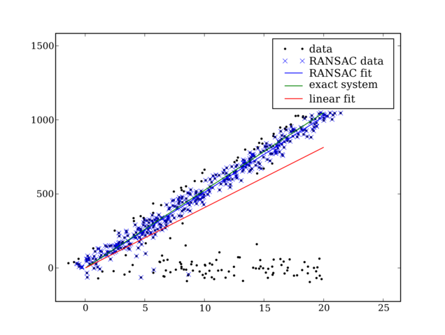

The attached file ( .. image:: RANSAC_attachments/ransac.py ) implements the RANSAC algorithm. An example image:
To run the file, save it to your computer, start IPython
ipython -wthread
Import the module and run the test program
import ransac
ransac.test()
To use the module you need to create a model class with two methods
def fit(self, data):
"""Given the data fit the data with your model and return the model (a vector)
"""
def get_error(self, data, model):
"""Given a set of data and a model, what is the error of using this model to e
stimate the data """
An example of such model is the class LinearLeastSquaresModel as seen the file source (below)
CategoryCookbook